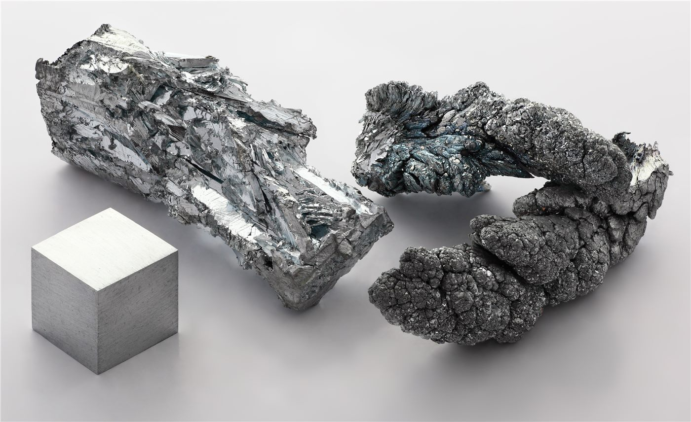

제1회 한·중앙아 정상회의 개막… '주요 거점에 희소금속센터'
한국과 중앙아시아 5개국 정상이 모인 첫 정상회의가 열렸다. 이재명 대통령은 주요 거점에 희소금속센터를 두는 구상과 함께 '실크로드 재건'을 협력의 표어로 제시했다.
양념자 기자 · 2026.09.18
橋한국

제1회 한·중앙아시아 정상회의가 서울에서 열렸다. 카자흐스탄·우즈베키스탄·투르크메니스탄·키르기스스탄·타지키스탄 등 5개국 정상이 참석했다.
광고 문의 · 300×250회의를 주재한 이재명 대통령은 자원과 물류, 인프라를 축으로 한 협력 구상을 밝히며, 주요 거점에 희소금속센터를 설치하는 방안을 제시했다.
희소금속은 이차전지와 반도체, 방산 소재에 두루 쓰이지만 산지와 정련 설비가 소수 국가에 몰려 있다. 중앙아시아는 매장 측면에서 대안으로 거론돼 온 지역이다.
자원만의 회의는 아니다
이번 회의는 자원 확보에 더해 물류 경로, 인력 교류, 기술 협력을 함께 다뤘다. 한국과 중앙아시아를 잇는 경로는 육상과 해상 모두 제3국을 거쳐야 하므로, 통관과 운임이 실무의 핵심이 된다.
'실크로드 재건'이라는 표현은 역사적 교역로의 상징성을 빌린 것이지만, 실제로는 현대적 운송망과 표준, 금융 결제 체계를 새로 맞추는 작업에 가깝다.
중앙아시아는 중국·러시아·튀르키예·유럽연합이 모두 관여하는 지역이다. 한국의 참여가 기존 협력 구도와 어떻게 맞물릴지는 앞으로 확인할 부분이다.
재한 화인 사회에도 관련 지점이 있다. 중앙아시아 출신 고려인과 중국 신장·간쑤 지역과 연결된 상인 네트워크가 한국의 무역·물류 현장에 이미 자리 잡고 있어, 경로가 열리면 실무 인력 수요도 함께 움직인다.